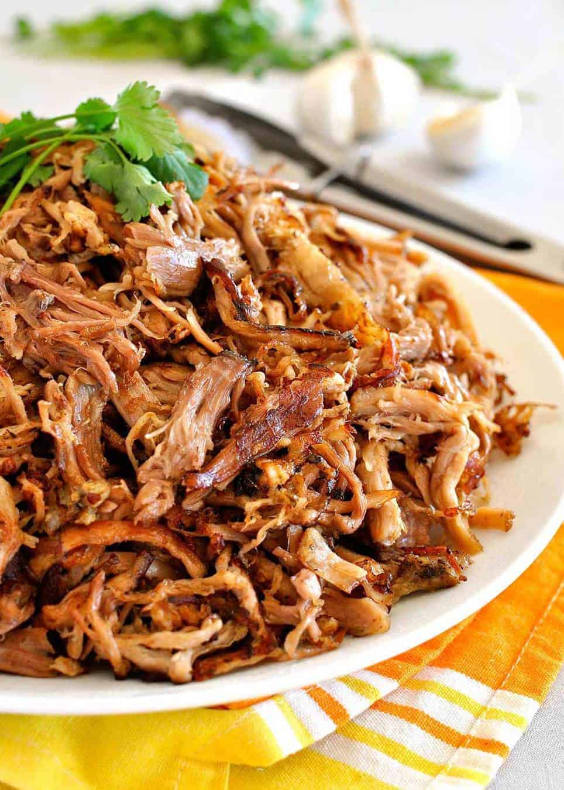

Go Back
Slow Cooker Carnitas

Carnitas means 'little meats' and is traditionally fried then braised. This recipe is made much easier using the slow cooker but the results are just as tasty. This makes a great filling for tamales, enchiladas, tacos and burritos. This filling is also great combined with your favorite barbecue sauce and served on buns.
Ingredients
- 1 teaspoon salt
- 1 teaspoon garlic powder
- 1 teaspoon ground cumin
- ½ teaspoon crumbled dried oregano
- ½ teaspoon ground coriander
- ½ teaspoon ground cinnamon
- 1 boneless pork shoulder roast (4lbs)
- 2 bay leaves
- 2 cups chicken broth
Directions
- Mix together salt, garlic powder, cumin, oregano, coriander, and cinnamon in a bowl. Coat pork with the spice mixture. Place the bay leaves in the bottom of a slow cooker and place the pork on top. Pour the chicken broth around the sides of the pork, being careful not to rinse off the spice mixture.
- Cover and cook on Low until the pork shreds easily with a fork, about 10 hours. Turn the meat after it has cooked for 5 hours. When the pork is tender, remove from slow cooker, and shred with two forks. Use cooking liquid as needed to moisten the meat.
Nutritional information
Per serving: 223 calories; protein 22.2g; carbohydrates 0.7g; fat 13.8g; cholesterol 73.3mg; sodium 474.3mg.